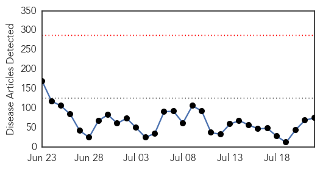
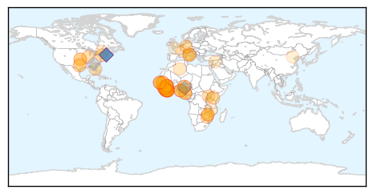

Unknown
30-Day Web Trend
0 alerts, 0 warnings

30-Day Twitter Trend
0 alerts, 0 warnings

Article Locations

Article Confidences

Top Articles:
- 0.985
- New person tests positive for active case of TB at Frank Macias Elementary
- 0.967
- BREAKING: New Airborne AIDS Virus Infects Thousands, Killing Over 200 in China
- 0.967
- Floridians urged to avoid leprosy-infected armadillos
- 0.966
- Florida Reports Higher-Than-Usual Number Of Leprosy Cases, Likely Caused By Armadillo Contact
- 0.959
- One Quang Nam person tests positive for diphtheria
- 0.951
- Armadillos believed to have caused LEPROSY in Florida patients
- 0.944
- Health providers to track water-borne illnesses following contamination
- 0.917
- Chicago Tribune
- 0.917
- Chicago Tribune
- 0.917
- Chicago Tribune
- 0.917
- Chicago Tribune
- 0.917
- Chicago Tribune
- 0.917
- Chicago Tribune
- 0.917
- Chicago Tribune
- 0.917
- Chicago Tribune
- 0.891
- Second active TB case at Frank Macias Elementary reported; no additional testing needed, officials say
- 0.889
- High Number of Leprosy Cases Due to Armadillos? How to Prevent Hansen’s Disease
- 0.888
- Florida Residents Urged To Avoid Armadillos Due To Rise In Leprosy Cases
- 0.888
- Nine Leprosy Cases Linked To Armadillos In Florida
- 0.880
- Swine fever the new normal?
- 0.874
- Armadillo exposure cited in Florida leprosy diagnosis
- 0.874
- Armadillo exposure cited in Florida leprosy diagnosis
- 0.848
- Suspected Mers Case in Rayong
- 0.846
- Florida residents urged not to hang out with armadillos, will get leprosy
- 0.840
- Leprosy spike in Florida caused by armadillos: officials
- 0.822
- Sierra Leone: United Nations Ebola Outbreak Update June 2015 -38th Edition
- 0.796
- Guinea Worm Phasing Out
- 0.793
- Winnebago hospital neglect led to 1 patient death, endangered 9 others
- 0.789
- Floridians urged to avoid leprosy-infected armadillos
- 0.787
- Armadillos Cause Leprosy in Florida, Health Officials Say
- 0.783
- Lyme disease advocates sound alarm on B.C. tests but medical experts disagree
- 0.780
- Gonzalo Higuaín se pelea con hincha por penal fallado contra Chile
- 0.778
- Ghana adopts tough measures to contain bird flu
- 0.750
- Wisconsin Law Journal - WI Legal News & Resources
- 0.707
- Plague confirmed in Fremont County fleas linked to prairie dog colony die off
- 0.704
- Medical camps set up in flood-affected districts
- 0.702
- French Teenager’s HIV Kept in Remission Without Drugs
- 0.701
- Florida residents reportedly urged to keep away from armadillos over leprosy fears
- 0.698
- Melbourne hotel's high tea salmonella outbreak reaches 17 confirmed cases
- 0.698
- Infant mortality deaths in DK to be audited
- 0.697
- White coats spread infection: Doc
- 0.686
- Bahamas becomes PAHO/WHO certified on elimination of rubella and CRS
- 0.685
- Are Spitting Armadillos Responsible For Surge In Florida Leprosy Cases?
- 0.683
- Government urged to revert to old system of Isolation wards for TB patients
- 0.680
- Florida Officials Blame Leprosy Spike on Armadillos, Warn People to Stay Away
- 0.678
- S. Korea may lose nearly $14b in tourism revenue to Mers, Asia News & Top Stories
- 0.655
- Varna district governor convenes urgent meeting on anthrax disease
- 0.655
- Infected meat tested anthrax positive
- 0.649
- Mangaluru doctor wants ban on white coats
- 0.649
- Sorry, deze pagina kon niet gevonden worden.
Showing top 50 articles...
Top Tweets:
- 0.674
- RT: H5N1 avian flu is spreading across West African poultry farms stoking fears the virus will jump from birds to humans http://…
Ebola
30-Day Web Trend
3 alerts, 0 warnings

30-Day Twitter Trend
2 alerts, 0 warnings

Article Locations
Article Confidences
Top Articles:
- 1.000
- Ebola: Not yet over
- 1.000
- Regional Ebola related travel restrictions
- 1.000
- Possible Ebola Patient Under Observation in New York City
- 1.000
- First case of Ebola diagnosed in U.S.: CDC
- 0.999
- How to Plan for Unlikely, Hard to Predict, Highly Disruptive Events?
- 0.999
- Liberia confirms spread of 'unprecedented' Ebola epidemic
- 0.999
- N.Y., N.J. Governors Stress Home Quarantine for Ebola Workers
- 0.998
- UN launches mission to halt Ebola spread
- 0.997
- Ebola deaths are still happening – and the Vatican is aiming to stop them
- 0.996
- Global leaders discuss Ebola’s effect on African tourism
- 0.996
- Illumina : The Long Read - Unlocking Ebola's Secrets: Part One
- 0.993
- Nigeria Donates Money To Fight Ebola In Africa
- 0.990
- Ebola: people want to go back to normality, but we must not let our guard down
- 0.989
- Feverish Traveler Recently Back to NYC from Guinea Does Not Have Ebola: Officials
- 0.987
- Ebola Situation Report - 22 July 2015 - Sierra Leone
- 0.985
- IOM & its partners assess efforts to fight new Ebola cases in Sierra Leone
- 0.983
- Nigeria donates N230m to fight Ebola
- 0.982
- Invest in health, says President
- 0.979
- IOM Partners Assess Efforts to Combat New Ebola Cases in Sierra Leone
- 0.978
- Equatorial Guinea Hosts International Conference On Africa's Fight Against Ebola
- 0.978
- Antiviral compound protects nonhuman primates against Marburg virus
- 0.974
- Novavax's Ebola vaccine shows promise in PhI
- 0.970
- Antiviral compound protects nonhuman primates against Marburg virus
- 0.963
- ACT Alliance Appeal: Post-Ebola Recovery Program, Liberia
- 0.963
- Liberia’s 168th Independence Anniversary Kicks Off with Investiture Ceremony;42 Honored, Eight, Deceased Healthcare Workers Posthumously
- 0.938
- Ebola Outbreak Updates – July 21, 2015 - Sierra Leone
- 0.927
- 'Avoid criticism of African leaders,' says Mugabe
- 0.923
- Survivors of Ebola Virus Disease Narrate Ordeal To Governor Fashola [READ]
- 0.900
- Avoid unnecessary criticism of African leaders
- 0.894
- Experts Say Armadillos Could Be To Blame
- 0.883
- All the world needs; Technology that facilitates coordination - Kachwanya.com
- 0.878
- Emergent BioSolutions Awarded $20M To Develop, Manufacture Drug to Treat Ebola
- 0.867
- Nigeria's Polio Eradication Campaign Helped Prevent Ebola Epidemic
- 0.867
- President Koroma makes strong appeal for Mano River Union States
- 0.861
- No Ebola Case At Sime Darby, Says Administrator
- 0.856
- World lost ‘precious time’ in Ebola fight
- 0.849
- LATEST: President Mugabe returns
- 0.822
- Guinea: UNICEF Guinea Ebola Situation Report, 14 July 2015
- 0.748
- Health Minister meets African counterparts at Malabo Ebola conference
- 0.746
- Fighting Ebola with Liberty and Justice
- 0.739
- Nigeria to host regional center for disease control
- 0.734
- Nigeria to host regional center for disease control - Xinhua
- 0.642
- The plight of African migrants in the Mediterranean
- 0.608
- CARITAS commences training on psychosocial councillors for ebola affected communities « Awoko Newspaper
- 0.577
- Chancellor Merkel addresses World Health Assembly
- 0.572
- B.C. exemplary in AIDS fight
- 0.554
- Nurses body hits at govt over drug crisisThe Nation Online
- 0.523
- O’Dowd Looks Back at Highlights of Her Tenure as NJ Health Commissioner
- 0.523
- Ebola Survivor Dr. Kent Brantly and His Wife Release Book
- 0.512
- Ebola: 2 More Test Positive...Lets Get Obama to #GiveThemExperimentalDrugs, Group Pleads
Showing top 50 articles...
Top Tweets:
- 0.953
- West Africa Ebola outbreak continues to chug along. 26 cases in the week to July 19. That's a small outbreak - in 1 week! 1/n
- 0.929
- 3/n More than half of the 26 recent Ebola cases were in the capitals of Guinea & Sierra Leone. Ebola + large cities = bad combination.
- 0.906
- RT: @EbolaAlert Impact of Literacy/Education On GovernanceHealth & Development-Ebola Outbreak In West Africa http://t.…
- 0.884
- 2/n Ebola update speaks to a prob warned of last wk: Globe's Ebola journey = indifference->fear->response->fatigue
- 0.851
- Core public health principles were used during the CDC response to the Ebola outbreak. Find out how. RoadtoZero https://t.co/ZiXGCHL6GN
- 0.789
- Good news in today's Ebola update: No new cases in Liberia. Most recent cases were contacts of prior cases - sign of good surveillance
- 0.702
- Beyond tragic: More healthcare workers have died in WAfrica (510) than there were infections in the previous biggest Ebola outbreak (425).
- 0.652
- Jean-Jacques Muyembe: «Beaucoup de défaillances de l'OMS en Afrique de l'Ouest» Ebola http://t.co/jI3Q2PHN2h
- 0.569
- Nigeria's Polio Eradication Campaign Helped Prevent Ebola Epidemic - VOA - Voice of America http://t.co/IKsCRe5R3V ebola EVD